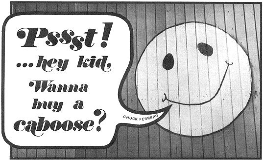
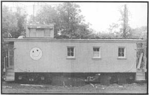
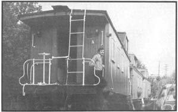
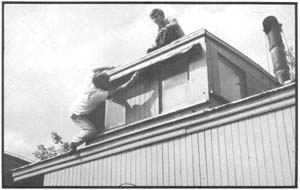
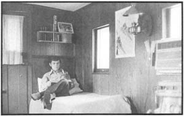
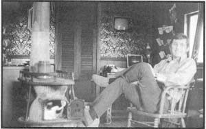

In the early morning, before most people get out of bed, I usually go for a long walk just to absorb the unadulterated sounds of nature . . . and it was on just such a walk that I discovered a purple caboose parked on a semi-deserted railroad siding.
Now it's almost impossible-even at 5:30 a.m.-to be unaffected by a purple caboose sitting in a nearly abandoned area . . . and the yellow sunshine smile painted on the side of this one made it absolutely irresistable. Paying no attention to the hour or to the red cabooses on either side, I climbed right up on the platform of that smiling wonder.
The sound of my own knocking suddenly brought me back to my senses. Five-thirty in the morning is no time to be beating on the door of a purple caboose! After waiting a few moments and getting no response, I made a hasty retreat. I also made a mental note to return at a more reasonable hour.
My subsequent visit proved that I hadn't been dreaming. There stood the happy caboose, sandwiched between what appeared to be three ordinary red ones. I cautiously stepped up on the purple car's platform again and peered through the window in the door. With the exception of some carpenter tools and lumber, the interior was bare.
I was badly disappointed and was starting to leave when an automobile pulled up and a man in his early 20's jumped out. He was wearing a smile as friendly as that of the sunshine face.
"Hi," he said as if we were old friends. "Will you join me for a cup of coffee?" He was headed toward one of the red cabooses and, in somewhat of a daze, I followed.
My wonder increased when we walked through the door. Inside, the small (14 ft. high, 9 ft. wide and 33 ft. long) railroad car was divided into living areas, the walls were gaily papered or paneled in dark wood, the floor was covered with a cheerfully patterned red carpet and a potbellied stove stood in the center of the main room. Not only was the red caboose a complete home, it was a very attractive one as well.
As my host showed me around and I began to close my gaping mouth, we exchanged introductions. Charles Bartlebaugh was the owner of both the friendly manner and the red caboose (it had been his home for the past four years).
And the happy purple beauty? "I sold that one to Dr. Klein. He's going to take it up north and use it for a ski cabin. In fact," Chuck continued, "I once owned all four of these cars. Selling cabooses to people who want a very inexpensive and very livable home is how I currently earn my living."
Now I never would've guessed that a living could be made selling cabooses, of all things, and I was anxious to find out how Chuck had gotten started.
"Let me preface that story," he said, "with the fact that I've been on my own since the tenth grade and have always felt that money is secondary to happiness. I guess I'm trying to say that even before I was out of high school, I was looking for some way of surviving without losing myself in a meaningless struggle just to make money.
"Anyhow, when I was still in high school my girl and I would come down to the tracks and talk to the guys that ran the local freight. There was an old wooden depot here then, and the whole scene was interesting to me. After a while we got to bringing some wine and chicken with us to share with the train crew and, in return, the crew would let us ride the freight on the one-day round trips. It was different and a lot of fun.
"Once, when I mentioned that I needed a place to live, one of the crew suggested that I buy a scrapped caboose. I don't know if he was joking or not, but the idea sounded great."
Shortly thereafter, Chuck graduated from high school and began looking for a caboose ("I mean I really looked!") but it took him from 1965 until 1967 to locate one.
"After all the letters I had written, all the scrap yards I had gone to and all the people I had talked with, it really was kind of odd how I happened to get my first caboose," Chuck recalls. "I was at a sports car race in Mossport, Canada and casually mentioned that I was looking for a caboose . . . and a guy I didn't even know said he knew where I could get one.
"It was really strange, kind of like walking down the street and having some character come up and whisper, 'Psst . . . hey kid, want to buy a caboose?" This guy seemed typically shady but, not having anything to lose, I followed his directions to a scrap yard in St. Thomas, Ontario and-sure enough-there was a caboose. As a matter of fact, I'd found eight of 'em.
"At that time, scrap dealers could purchase the cars, burn off the wood and salvage the metal for a profit. This particular dealer was willing to let me have one of his eight . . . as long as I took the other seven and paid him $350 each. Since I didn't have even the money to buy one-let alone eight-I accepted . . . which meant that I had to do something. "
What Chuck did was to place an advertisement in the London and Toronto papers offering six cabooses, as great little cottages, for only $350 apiece . . . the same price he had to pay for the cars. An amazing number of people answered the ad and, in no time at all, Bartlebaugh had sold all six. With $2,100 in his hand, the dealer let Chuck have the other two cars on credit.
"At last I had my caboose," Chuck remembers. "I didn't know exactly what I was going to do with it, but I had it . . . and one to spare. Both were in excellent condition, and getting the railroad to pull them was no problem. Crossing the border back into the United States did, however, present some difficulty."
Chuck, it seems, had made the mistake of painting one caboose (the one he still lives in) before leaving Canada. When the Customs officials' saw the bright red car, they decided that it was still good enough to qualify as railroad equipment and demanded a $1,000 deposit before they'd release it. There was no way that Chuck could convince them differently.
Finally, out of desperation, Bartlebaugh contacted a broker (someone who brings supplies across the border for a price). The broker's fee put Chuck another $100 in debt, but it was worth it. The caboose was classified as scrap and brought into the country duty free. Since that time Chuck has bought other cabooses in Canada and has had no trouble bringing them into the United States . . . he just doesn't paint them until he's back home.
"Once across the border that first time, I was faced with another difficulty . . . where to park my caboose. The local railroad didn't want me on their sidings but, fortunately, a petroleum dealer owned the land under this one and he said I could park here. When the railroad decided to remove the tracks, the oil company bought them . . . and I've been here ever since for only $15 a month, which is about the least expensive rent I've ever heard of."
After getting settled, Chuck had to find a way to pay for the two cabooses. The passing thought he gave at the time to actually dealing in used railroad cars was dismissed because of the difficulty of finding the cars and the expense involved in moving one off the tracks. Still, not being eager to get into the 8-to-5 routine, he tried to think of alternative ways to make money.
What Bartlebaugh came up with was a series of schemes that would let him pursue his interest in railroads and make a living at the same time. The first was an idea for creating a shopping center out of several train cars and-if possible-an engine. Chuck figured he could lease the cars for use as retail stores-maybe even as a restaurant-and could then use his own caboose as both an office and a residence.
"This was a couple of years ago and my first experience in the business world. In the process of getting investors I came across a man who seemed very interested, so I explained my plan to him in detail. Once he had my idea to go with his money, he decided that I would be of no further use and he told me to get lost in very strong language. For what it's worth, my idea seems to be working out very well for him."
At about the same time-it was 1969 and the 100th anniversary of the first transcontinental railroad trip- Bartlebaugh had another grandiose scheme. Chuck's plan was to relive that first cross-country railroad jaunt by taking his caboose from New York to California and back.
Of course, there was that old nemesis . . . money. The cost would have been prohibitive to Chuck, so he went out again, looking for people to back him. "I guess I had another good idea because I was able to get my caboose carpeted and paneled for free as a promotional gimmick. Then I managed to interest a couple of railroads and they offered me free passage. It looked as if the trip was on."
By this time the newspapers had heard of Bartlebaugh's plans and were sending people out to interview him. He was a guest on a 1-1/2-hour TV talk program, Johnny Carson invited Chuck to appear on the "Tonight" show before the trip and a third TV talk show (no longer on the air) wanted to interview him at the end of the journey. One of the network news commentators even arranged for the transcontinental traveler to send in weekly progress reports once he was under way.
Everything was shaping up rapidly and, not only was Chuck Bartlebaugh going to make the cross-country anniversary trip, but it looked as if he would make some money, too.
"I guess I should have known better," Chuck laments. "A few days after the news commentator contacted me, I received a letter from the railroads stating that they could no longer offer me free passage. They felt I was getting too much publicity and that, if they went through with the deal, they would be letting themselves in for a big liability risk because my caboose was sure to draw crowds too large to handle wherever it stopped. They were very nice about the whole thing, and they were right . . . I guess. But there was no way I could finance the trip myself, so I had to put it off. I haven't forgotten about it . . . I've just delayed it."
As a result of the publicity he'd received, people began stopping by the siding almost every day to see Bartlebaugh. They all looked at his cabooses and asked questions, quite a few showed an interest in buying and most were very open to his way of life. Once more, Chuck began to think about dealing used cabooses for a living.
In the two years between 1967 and 1969, Bartlebaugh had been doing more than planning shopping centers and transcontinental trips . . . he had also been busy building a network of contacts that would eventually help him locate and buy a good number of the used cabooses in North America as they came onto the market.
"I wrote letters to all the railroads, in an effort to locate the cars. There are over 200 major rail lines and another 100 smaller ones, you know, and that made for a lot of correspondence. I drove around a good deal, too, checking railroad yards for cabooses that looked abandoned. When I found one, I asked around to see who had the responsibility or authority to sell it. Usually I had to write a lot of letters back and forth-in addition to contacting people on the telephone and really just making a pest of myself-before I could obtain the information I needed.
On one occasion, Chuck called a major railroad and talked to 27 people in his effort to find out which one could authorize the sale of a caboose he'd found. He got all the way up to one of the vice-presidents only to be referred back to the very first person he had called. It was then that Chuck decided to try and go about it a different way . . . the only trouble being that there was no different way.
Bartlebaugh persisted in trying to cut through the red tape of "official channels" . . . and he finally succeeded. By 1970, thanks to his private grapevine of railroad contacts and friends throughout the U.S. and Canada, Chuck was able to find and buy cabooses with a minimum of hassle. "I now know people who will tell me when a caboose is going to be released," he says. "When this happens, I just check my list to see who's authorized to sell that particular car, contact the person and add another caboose to my collection."
Currently, the number in that collection is limited at any one time to three (in addition to his own) because of the size of Bartlebaugh's home siding. The cabooses now occupying the site are already sold but are either being worked on or are waiting to be moved. When they go, Chuck will buy another three for resale . . . providing he can find them.
"Wooden cabooses are rarely used anymore and are becoming harder to locate," Chuck comments. "When I bought my first ones in 1967 they cost me $350 each. Now, because of their growing rarity, I pay $750 to $800 apiece. The money-minded will note that this means the value of the caboose is rapidly increasing."
When Chuck does locate a caboose he takes a couple of retired railroad friends with him to inspect it. "I've found these men to be great guys," he notes. "When it comes to railroad equipment, they really get a lot of pleasure out of helping me check it out.
"Before I purchase a caboose, we look it over and make sure it's in running condition and, if the wheels are badly worn or the wood dry-rotted, I won't buy. When the wheels are squared off or the wood wasting away, the car will vibrate apart on the tracks. A caboose with bad wheels may never even make it to its destination. However, if there's just one bad wheel or only a few boards that need changing, the car is fairly solid and I'll probably take it."
Before Chuck accepts a car, he also makes sure that its brake lines are good and that the trucks (wheels) are OK for interchange (changing from one railroad line to another). Chuck says, "if the caboose was built for one of the old narrow-gauge lines, it won't transfer to the standard-gauge track now used by most railroads. Such a caboose, except under very unusual circumstances, isn't worth buying."
A caboose currently costs Bartlebaugh between $750 and $800 and he sells them to his customers for $1,250. For the $450 or $500 difference, Chuck's buyers purchase both a railroad car and a guarantee that the car will be delivered to a specified site in running condition. If it's impossible to get the caboose to the site, Chuck will return the customer's money in full. And if the car breaks down enroute-no matter where-Bartlebaugh will either refund the money or have the caboose repaired at his expense. "That makes me doubly careful when I buy a caboose," Bartlebaugh says, "and, so far, I've had no trouble delivering the ones I've picked."
Chuck admits that moving a caboose off the railroad tracks and onto a site once presented a problem, both financially and operationally. "In fact," he says, "it was this very problem that prevented me from selling cabooses for a living for more than two years."
Back when he was new at the business of buying and selling railroad cars, Bartlebaugh shipped each caboose by rail to the point nearest the requested site and hired an expensive crew of heavy equipment movers-called riggers-to move the caboose from the tracks to its new location.
Since the riggers' union required that ten men be put on the job, the final leg of the moving process usually cost about $3,000. Riggers were also difficult to locate and, even when they could be found, wouldn't move a caboose more than 12 miles.
Chuck eventually learned that, because a caboose weighs only 18 tons, it can be moved from a railroad by a housemover . . . who works either alone or with just one helper. Not only is this method considerably cheaper, but housemovers are easy to find and will haul a caboose almost any distance. Now Chuck can have his cars relocated just about anywhere, including places where there aren't any roads (just so long as a moving truck can make it over the ground) for about $400.
With a dependable source of cabooses lined up and the problem of moving the cars solved, Chuck obviously needed only one thing-customers-to put him in business. I was beginning to wonder just what kind of folks would buy a used railroad caboose when Bartlebaugh answered the question for me.
"People who buy cabooses come in all shapes and sizes, and they purchase the cars for many different reasons. Some folks want a caboose for a cottage, a hunting or fishing cabin, a ski lodge, workshop, art or craft gallery or even a permanent home. Others just buy the cars to put in their back yards."
The old railroad cars also have a special appeal to people on the move. A caboose owner can travel conveniently and relatively inexpensively with all the comforts of home . . . because he just takes his house with him. If it's in good repair and parked on an accessible siding, a caboose-home can ride the rails just like any other passenger car.
When Chuck wants to take a trip, for example, he simply tells the officials at the nearest freight office where he wants to go and fills out a bill of lading. The caboose is then inspected to see if there's enough oil in the hot boxes and that the brakes will hold air. If everything checks out, a train picks up the car, takes it to the siding nearest Chuck's destination and leaves it until he's ready to come back. Cost is 44 cents a mile, with a minimum travel requirement of 75 miles . . . not cheap, but not expensive either if a few friends ride along.
Chuck's description of living in a caboose was beginning to sound so good that I figured there must be some catch (probably money) that he hadn't told me about. Granted that a good used caboose bought from him cost only $1,250 plus an average $400 for delivery . . . how much would I really have to spend to turn one of the railroad cars into a completely finished and furnished home, ski lodge or whatever? And then how much would it cost to park and maintain my new pride and joy?
"That," says Chuck, "depends on what you want. I would say that for about $2,500 you could have yourself a really plush caboose. Take that purple one of Dr. Klein's. Right now, we're putting in a small sauna bath. Once that's completed, we'll add paneling, lighting fixtures, refrigerator, stove, bathroom, beds . . . the whole works. I'm sure that his total cost for the caboose, remodeling and delivery won't be much over $2,500."
Bartlebaugh further explained that, after the caboose has been bought, moved, remodeled and delivered, there's very little expense involved. Most land owners-even when their site is in the middle of the woods-set their cabooses on a strip of track, which can be purchased from any railroad for next to nothing. This means there's no worry, work or cost for a foundation.
There's also little problem for the caboose owner who either doesn't have land or who would rather (say, for travel reasons) stick to the regular working sidings.
"The railroads in this area-and many others-are kind of funny," Chuck explains. "If they can't have a business that brings them rail profits, then they'd just as soon let the tracks rust as make money renting them for something like this.
"Often, though, such 'unprofitable' tracks are sold, and there are hundreds of privately held sidings like this one which the owners are more than willing to rent cheap. As I said before, to keep four cabooses here costs me a total of only $15 a month."
I had to admit that Chuck's converted cabooses were sounding better all the time . . . but what was it really like to live in one of these retired railroad cars? Chuck answered that one by pointing out the comfortable features of his own caboose.
Twin beds just inside (one on the left and one on the right) the "front" door double as sofas. Above the beds are book shelves and the space underneath each sofa is used for storage.
The middle of Bartlebaugh's car boasts the genuine, original, old-timey potbellied stove with which the caboose was originally outfitted. "All the lanterns came with this car, too," says Chuck, "but it's now virtually impossible to find a caboose with all its interior trappings complete."
My host went on to say that the potbellied stove is great for breaking the chill but that he prefers to use a 1,500 BTU electric space heater to keep his retired railroad car cozy in sub-zero weather. "There are two reasons for this," he said, "One is that the fumes from the stove are potentially dangerous and the other is that it's just too much trouble to feed the coal stove all night. The little potbellied burner is a lot of fun, though, and quite handy for warming the car during the fall, spring and on mild winter days."
Directly across from the stove, Bartlebaugh has hung a table from the ceiling on chains. When traveling with his home, he unhooks the chains and allows the table to drop down against the wall.
Chuck has tucked a mini-kitchen into one far corner of his caboose's main room and a desk into the other. The kitchen is complete with a bottled-gas stove and hot and cold running water (fed from the same kind of portable tank that is commonly used in large boats). Cupboards for cooking utensils line the wall above the sink and a small television set is built in over the desk.
A pair of louvered swinging doors between the corner kitchen and the desk open into the cupola or "back room" section of Chuck's rolling home. The bathroom, with shower, is enclosed on one side of the hall beneath the cupola and Chuck's refrigerator and main storage space is on the other.
"Upstairs" on both sides are built-in "booth" seats. "This is one of the places where cabooses often vary in size," my guide told me. "Mine seats four people on each side and makes a great place from which to view the scenery on a trip. Other cabooses, such as Dr. Klein's purple beauty, have a cupola large enough for an extra bed on each side of the hall . . . thereby increasing the car's sleeping space."
Behind the cupola, outside the railroad car's "back" door, is Chuck's back porch or platform. The roof of the caboose, which overhangs the front platform, overhangs this one too and guard rails and ladders to the roof-front and rear-add the finishing touches to the outside of the car. Inside, a telephone tops off all the comforts of home.
Most people prefer to do their own wiring, decorating and painting and-except for replacing windows and an occasional door-Chuck doesn't usually remodel the cabooses he sells. He's always willing, though, to help people-like Dr. Klein-who do want assistance with the job.
Although Chuck Bartlebaugh buys cabooses all over the country and sells them throughout the state of Michigan, it is obviously impossible for him to travel any great distance to inspect and sell one car. In other words, if you live far away from Michigan and you want to buy a caboose, you're left pretty much to your own devices . . . but not entirely.
Chuck says, "If you want to purchase a caboose, be careful. Approximately 90% of the cars which are retired are simply not worth buying. Inspect any surplus rolling stock very carefully (preferably with the help of one or more retired railroadmen who know what to look for) before you lay your money down. And if you live in the United States or Canada and don't know where to begin looking for the caboose of your dreams, let me know and I'll gladly help you locate one near your home. Just write to me, Charles Bartlebaugh, Box 402, Rochester, Michigan 48063."
Happy hunting!
|
 |
 |
 |
|
 |
 |
 |